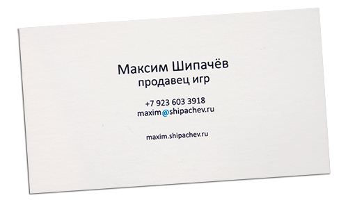

У меня однозначные проблемы. С идентификацией. Не с самоидентификацией, нет. Сам я себя ощущаю довольно целостно в зыбком зыбком мире. Я бы даже не назвал это проблемой, в смысле задачей. Проблема — в её классическом понимании — вопрос, не имеющий однозначного решения.
Всему виной достаточно большое количество увлечений и деятельностей, ну и круг общения я стараюсь расширять перманентно. Таким образом, субъективно, меня эта проблема ничуть не тревожит, а наоборот.
Проблема с идентификацией меня заключается в том, что я не пойми что. У меня есть знакомые журналисты, фотографы, дизайнеры-фрилансеры (привет, Сергей), бизнесмены, маркетологи, спортсмены, телеведущие, парикмахеры, программисты, продавцы от бога и менеджеры от безысходности. Попроси этих знакомых представить меня, вряди ли ты услышишь что-то вменяемое — «Ну это тот чувак, который… (сделал keminfo; у него газета; работает в эсдээсе; ездит на Мурано; блогер; в качалку ходит, жрёт химию; несёт чушь какую-то в фейсбуке; собирает фотки Кемерова; в том году ездил в Абхазию с семьёй на машине; благотворительный фонд пиарит)». В общем дальше идёт набор каких-то случайных фраз зависящих полностью от контекста разговора.
Стоит отдельно отметить, что тот же фэйсбук даёт в этом отношении совершенно замечательные возможности. Выстроить альтернативный образ — дело полугода.
Проблема яркой забавной вспышкой мелькнула около месяца назад. На презентации благотворительного фонда «Счастье детям» в числе учредителей, уважаемых людей со статусом и должностями, я был обозначен как известный журналист — не совсем журналист, да и известный в узких кругах, но меньшее из зол.
Часто меня называют блогером — коротко, всё ещё чуть модно… Блин, ну какой я блогер? Блогом-то сыт не будешь — 20 тысяч рублей с премией «Медиапрестиж» в прошлом году — единственные деньги которые я заработал блогерством.
Одно время, среди друзей, я был этаким другом-фотографом всего лишь первым купив зеркалку. Сейчас зеркалки есть у всех и образ вновь размылся. Несколько моих друзей считают меня дизайнером. Почему? А другому своему старинному школьному другу я так и не смог пару лет назад объяснить чем конкретно я занимаюсь. Он работает в Гудлайне и строит сеть. А я?
